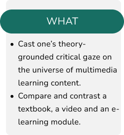
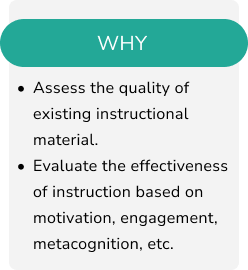
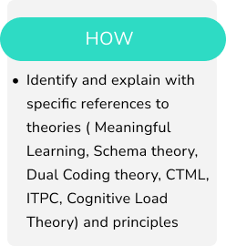
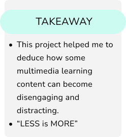
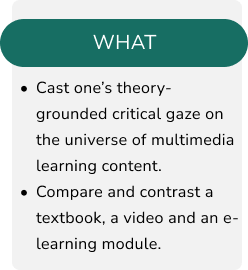
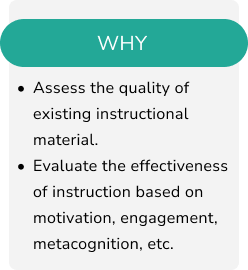
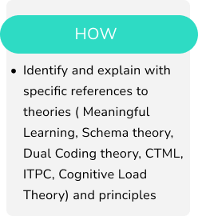
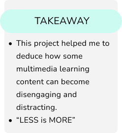

Design Critique
Here is the overview of the lesson design critique project :
   

Here is the overview of the lesson design critique project :
   
(01)Research
| Topic | Different
Multimedia contents |
Targeted audience !

(02)Analyze
| Different Multimedia
contents |
Theories & Multimedia
principles applied +
violated|

(03)Compare
| Topic | Different
Multimedia Type of
resource , knowledge,
affordances |

(04)Conclusion
| Proposed
improvements |lesson
Redesign

Topic chosen for Lesson Design Critique : Newton’s first law of motion
Resources :
| Resource 1 | Resource 2 | Resource 3 | |
|---|---|---|---|
| Types of Resource (medium) |
Traditional book: images and text |
A virtual museum experience using videos, recorded lecture, assignment |
E-Learning module using videos, clips, text |
| Affordances | Book | PC | PC |
| Type of Learning |
Formal | Informal+Formal | Formal |
| Type of content |
Conceptual | Conceptual and Interactive |
Conceptual and Interactive |
| Target Audience |
Middle School, Standard 9 |
Elementary School, Standard 1 |
MIddle school Standard 7-9 |
| Theories Applied |
Dual COding Theory, Ausbel's Combinational and Subsumption (Assimilation) Theory |
Dual Coding theory CTML, Multimedia Principle, Singaling Principle, Segmenting Principle |
Information-processing Theory, working Memory, Schema Theory, CLT, and CTML theory. |
| Violations | Information Processing theory, Cognitive theory, Load, Information Processing theory |
Cogntive Load Theory, Overstimlulation |
Segmenting Principle, Cogntitive Load Theory Signalling principle, Extraneous Cognitive Load theoy |
(Table 1)
| The Cognitive Process Dimension | ||||||
|---|---|---|---|---|---|---|
| 0 - Resource 1 0 - Resource 2 0 - Resource 3 | ||||||
| The Knowledge Dimension |
Remember | Understand | Apply | Analyse | Evaluate | Create |
| Factual | 000 | 000 | 00 | 00 | 0 | |
| Conceptual | 000 | 000 | 00 | 00 | 0 | |
| Procedural | 00 | 00 | ||||
| Metacognitive | 0 | 0 | 00 | |||
(Table 2)
From the two tables, we can conclude that: